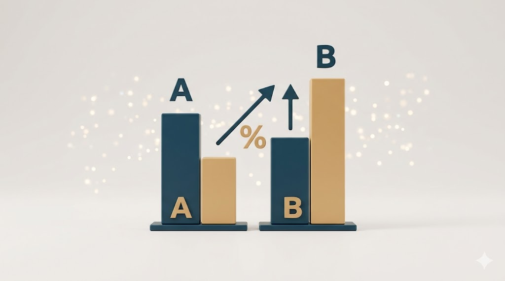

Statistical analysis of advertising campaigns to validate the effectiveness of new creative assets. I utilized hypothesis testing to determine if conversion rates were statistically significant.
Comprehensive Exploratory Data Analysis (EDA) on economic datasets. I applied statistical hypothesis testing to identify and validate correlations between various macroeconomic variables.